Lab 0 — Edge AI Vision: TensorFlow Lite Micro (Student Guide)
Adapted from the AIoScout TF Lite Training Manual (2026, rev. 2) for secondary school students.
Lab focus — collect images, train an image-classification neural network (no programming required), and run it live on the ESP32-P4 microcontroller.
1. Overview and Learning Outcomes
This laboratory equips the robot car with visual recognition. By the end you can:
- Set up the ESP32-P4 development board with the Arduino IDE
- Collect and preprocess image samples from a camera
- Train a convolutional neural network (CNN) with the TFLiteTraining application, without writing training code
- Explain hyperparameters and their effect on training results
- Export a quantized model and deploy it to the microcontroller for real-time inference
Key words: machine learning · training · sample · CNN · hyperparameter · overfitting · quantization · inference · edge AI
2. Background — Machine Learning on a Chip
2.1 Rules versus learning
A conventional program follows rules written by a programmer: if the pixel is dark, do X. Such rules cannot describe how to recognize a stop sign in an image — no one can write them by hand. Machine learning inverts this arrangement: instead of receiving rules, the computer receives many labeled examples (images with the correct answer attached) and derives the rules itself. This process is called training.
2.2 What Is a CNN?
A Convolutional Neural Network (CNN) is the standard neural-network architecture for images. It can be understood as a stack of small feature detectors: early layers detect simple patterns (edges, blobs), later layers combine them into complex ones (shapes, objects). The final layer outputs a confidence for each class — for example, "sign: 92%, wall: 5%, floor: 3%".
2.3 What Is TensorFlow Lite Micro?
TensorFlow Lite Micro (now called LiteRT for Microcontrollers) is a version of Google's ML runtime designed for microcontrollers — chips with only kilobytes of memory:
- The core runtime fits in 16 KB of memory
- No operating system, no standard C/C++ libraries, and no dynamic memory allocation are required
- Models are quantized to int8 (each number stored as 1 byte instead of 4) so they are small and fast enough for a microcontroller
Running AI directly on the chip, instead of sending images to a server, is called edge AI. It provides fast response, requires no network, and preserves privacy.
2.4 The ESP32-P4 Development Board
The ESP32-P4 is a high-performance system-on-a-chip (SoC) from Espressif, designed for exactly this kind of work:
- Dual-core processor with sufficient speed for real-time inference
- Rich peripheral interfaces and camera support (for example the IMX219 camera module)
- Captures images, processes them on-device, and runs TensorFlow Lite models in real time
It is programmed with the Arduino IDE — the same environment used in the earlier labs.
2.5 The TFLiteTraining Application
TFLiteTraining is a desktop application for training lightweight image classifiers, inspired by Google's Teachable Machine. It supports the complete workflow:
- Collect labeled image samples — from a webcam, uploaded files, or a serial camera (the ESP32-P4)
- Preprocess them (crop, filter noise) — no code required
- Train a CNN by adjusting hyperparameters
- Preview the model's live performance
- Export a fully quantized int8 TensorFlow Lite model plus the C/C++ files, ready to deploy to the microcontroller
The workflow of this lab: Collect → Preprocess → Train → Preview → Export → Deploy.
3. Task 1 — Set Up Arduino IDE and the ESP32-P4
Step-by-step
Step 1. Download the latest Arduino IDE (version 2.3.10 or higher) from https://www.arduino.cc/en/software and install it.
Step 2. Open the settings page (cmd/ctrl + ,):
- macOS: Arduino IDE → Settings → Additional Boards Manager URLs
- Windows: File → Preferences → Settings → Additional Boards Manager URLs
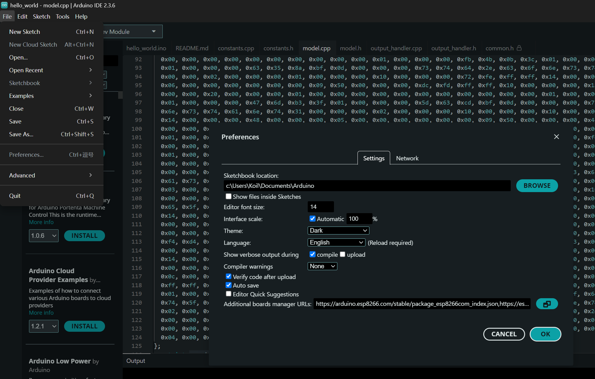
Windows: Preferences dialog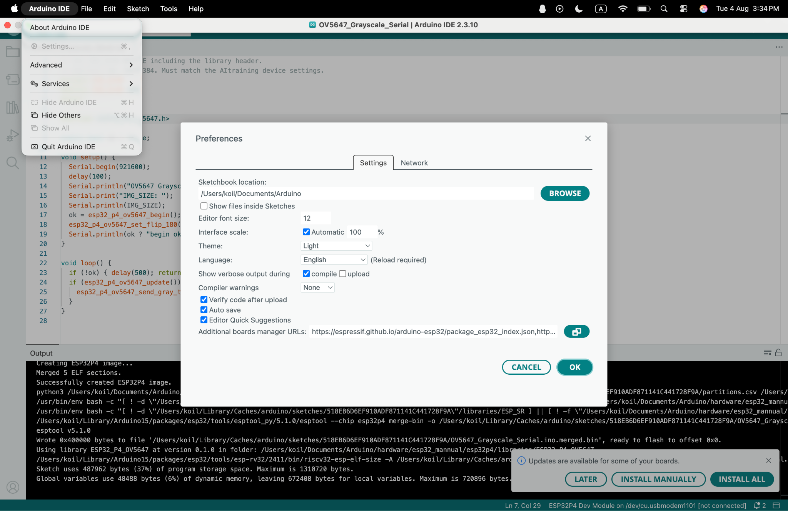
macOS: Settings dialogStep 3. Add the ESP32 board index URL and click OK:
https://dl.espressif.com/dl/package_esp32_index.json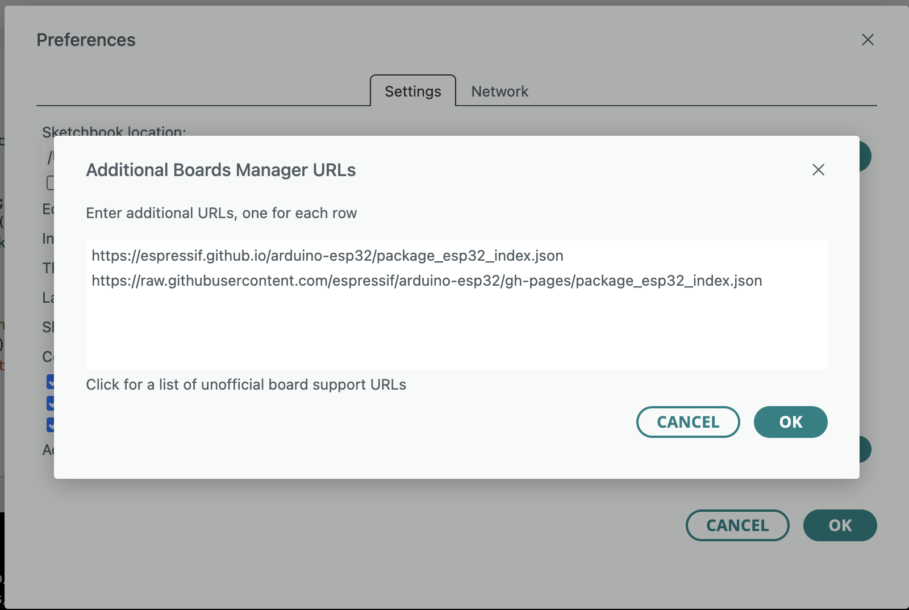
Paste the URL into "Additional Boards Manager URLs"Step 4. Go to Tools → Board → Board Manager, search esp32, install "esp32 by Espressif Systems", and select version 3.3.1 exactly.
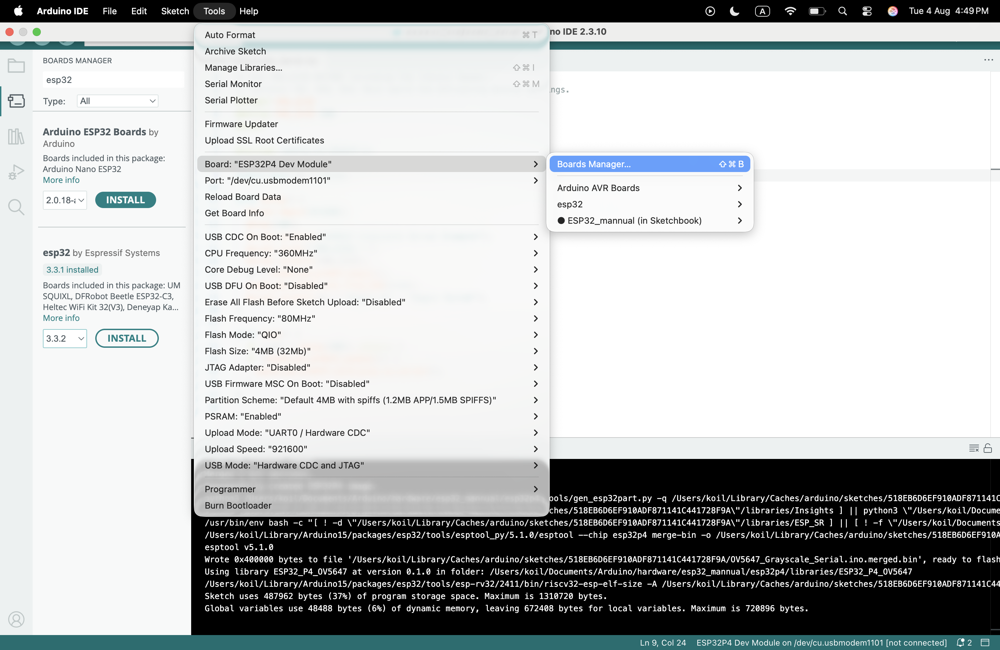
Board Manager: install esp32 by Espressif Systems, version 3.3.1Step 5. Unzip the provided esp32_mannual.zip and place the folder into your Arduino hardware path:
- macOS:
/Users/<you>/Documents/Arduino/hardware/ - Windows:
C:\Users\<you>\Documents\Arduino\hardware\
The final path should be: /Users/<you>/Documents/Arduino/hardware/esp32_mannual
Step 6. Back in the IDE: Tools → Board → ESP32_mannual → select ESP32P4 Dev Module, and copy the board settings shown in the manual one by one (do not set the "Port" at this stage):
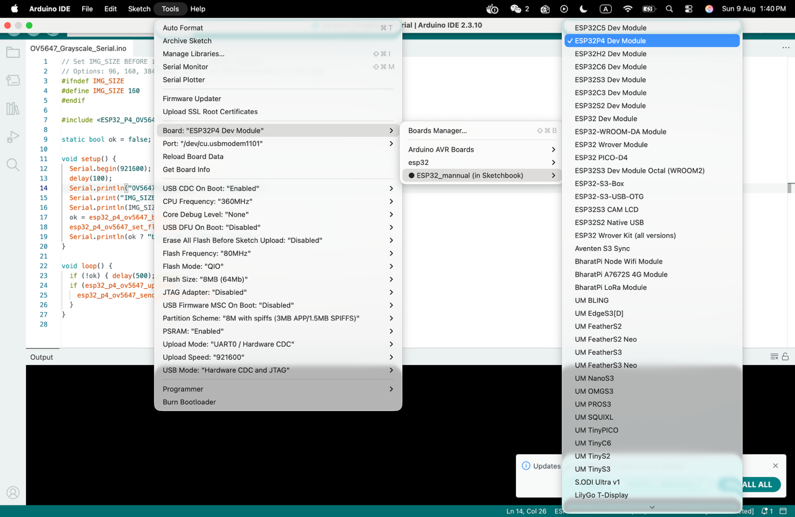
Copy the board variable settings one by oneStep 7. Now choose the Port that connects to your board:
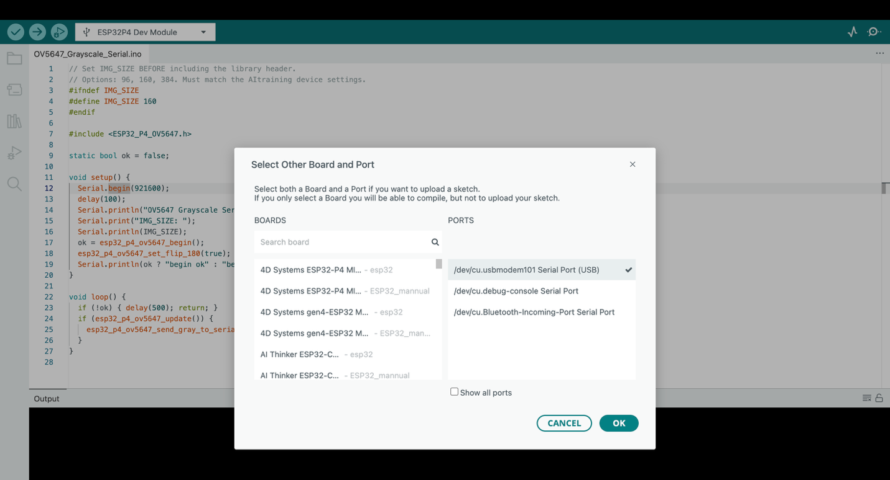
Select the port your board is connected toStep 8. Open and upload the sample code (it streams grayscale images from the camera over serial):
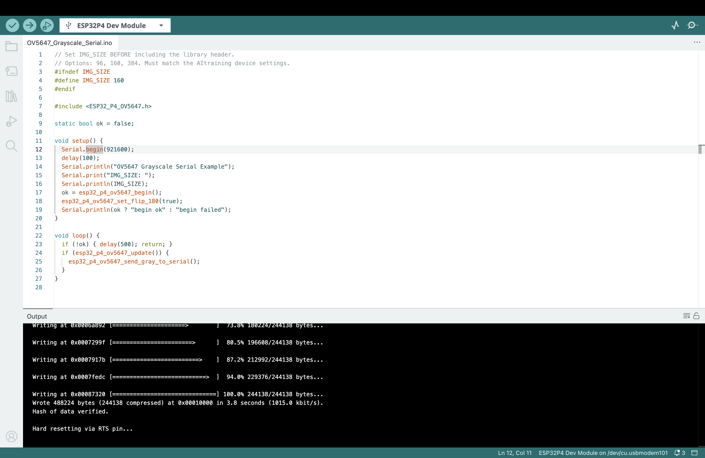
Click Upload and wait for successStep 9. Open the Serial Monitor. A continuous stream of garbled characters is the binary image data; it indicates a successful upload. Then close the Serial Monitor — it occupies the port, which the TFLiteTraining application requires later.
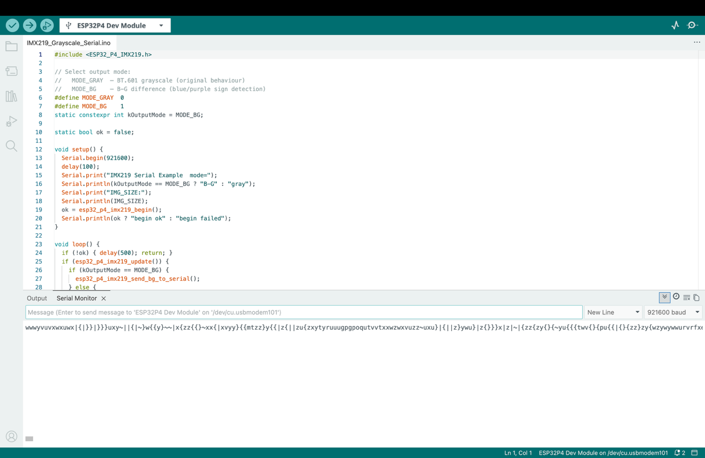
Garbled characters = the grayscale image stream — the upload succeededShow the TA / instructor: the sample code uploaded successfully, and the image stream visible in the Serial Monitor — then closed.
4. Task 2 — The TFLiteTraining App
4.1 Install and Open the Project
Step 1. Install the application from the provided .dmg (macOS) or .exe (Windows), and download the template project file template.tmproj.
Step 2. Open the application, click Open Project, and select template.tmproj:
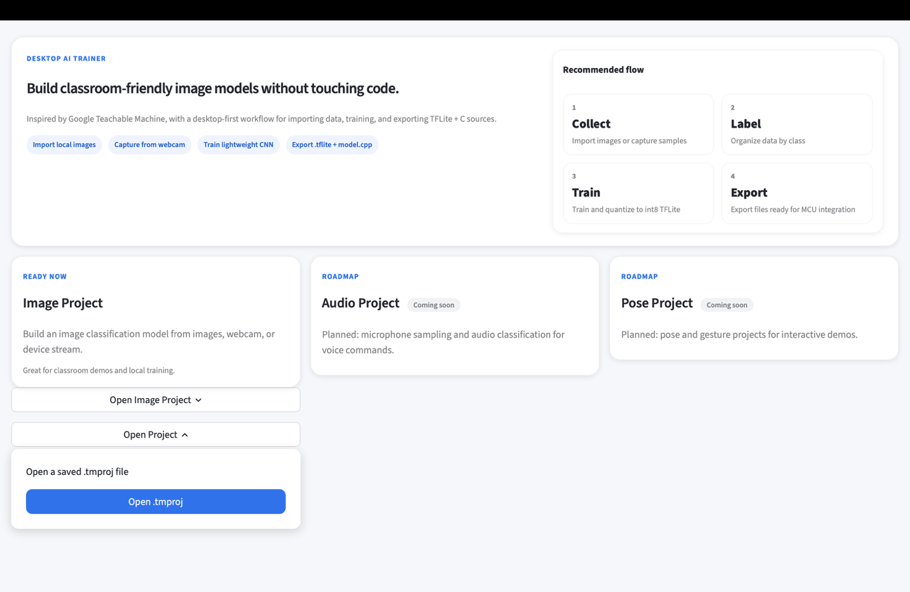
Open Project → template.tmproj4.2 The Three Areas of the Workspace
The workspace is divided into three areas:
| Area | Purpose |
|---|---|
| Sample Area | Collect and preprocess the data (images) |
| Train Area | Control training via hyperparameters |
| Preview Area | Preview the model's live performance |
 Sample Area, Train Area, and Preview Area
Sample Area, Train Area, and Preview Area
4.3 Collecting Samples
There are three ways to collect images:
- Webcam — uses the laptop's (or an external) camera; a specific camera can be selected with the Gear icon
- Upload — chooses picture files from the computer
- Device — captures images directly from the ESP32-P4's serial camera
For Device input: click Device, select the board's serial port, and check the Gear settings. The defaults — 96×96, Grayscale, 115200 baud, sync header AA 55 AA — match the sample code flashed in Task 1. Do not change them in this lab.
Capturing: click Capture for a single picture, or press-and-hold Hold to Capture for a continuous stream.
 Sample collection — capture single images or hold to capture continuously
Sample collection — capture single images or hold to capture continuously
Classes: each category (for example "left arrow", "right arrow", "wall") is a class. Add classes with the + button, rename by clicking the name, delete with the × button. Keep a similar number of samples in each class (for example 30–50 each).
Deleting a sample: hover over any sampled image and click to delete it.
4.4 Preprocessing — Making Cleaner Data
Data quality matters more than model complexity. Enter the image-processing page by clicking the Edit icon. The page has two parts: the Image Viewer (left) and the Sample Worktable (right).
 Image Viewer (original + processed) and the Sample Worktable
Image Viewer (original + processed) and the Sample Worktable
Key concepts:
- ROI (Region of Interest) — the purple rectangle marking the area that will be cropped and used for training; everything outside is discarded
- Dark Thr (Darkness Threshold) — pixels darker than this value become pure white
- Lum Thr (Luminosity Threshold) — pixels brighter than this value become pure white
These two thresholds remove environmental noise — background that is much darker or brighter than the subject disappears.
| Parameter | Effect |
|---|---|
| Preprocess Mode | Auto — a search box in the middle finds and crops the darkest area automatically. Manual ROI — the crop region is dragged manually on the original image. |
| Dark Thr | Pixels below this brightness → white. Global setting for the whole class. |
| Lum Thr | Pixels above this brightness → white. Global setting for the whole class. |
| ROI x1, y1, x2, y2 | Relative coordinates of the crop's top-left (x1, y1) and bottom-right (x2, y2) corners. For example, x1 = 0.2, y1 = 0.1 on a 96×96 image → pixel (19, 10), rounded to the nearest integer. (Manual ROI mode only.) |
All processed images are resized to image size × image size (set in the Train Area) before training.
Keyboard shortcuts in the edit page:
| Key | Action |
|---|---|
| Arrow keys | Move between samples |
| Shift + Arrow keys | Move the ROI (Manual ROI mode) |
| F1 | Switch to Auto preprocess mode |
| F2 | Switch to Manual ROI mode |
| D | Delete the current sample |
| S | Save changes |
| ESC | Exit the edit view |
Save after every change — unsaved preprocessing is lost.
4.5 Hyperparameters
Open the hyperparameter panel with the Advanced icon in the Train Area:
| # | Hyperparameter | Default | Range | What it does |
|---|---|---|---|---|
| 1 | Image size | 96 | 96, 160, 384 | Input resolution. Larger = more detail, but slower training and inference. Must match the input size in the Preview Area. |
| 2 | Color mode | grayscale | rgb / grayscale | Input channels (1 or 3). Always use grayscale for the B-G / G-channel pipeline. |
| 3 | Batch size | 16 | 8 / 16 / 32 / 64 | Samples per training step. Larger = faster but more RAM. 16 is suitable for 96×96. |
| 4 | Epochs | 20 | 1–200 | Full passes through the dataset. More = better fit, but risks overfitting (memorizing instead of learning). |
| 5 | Validation split | 0.25 | 0.05–0.50 | Fraction of samples held out to check the model. 0.25 = 75% train, 25% validate. |
| 6 | Learning rate | 0.001 | 0.00001–0.1 | Step size of each weight update. Higher = faster but unstable. 0.001 is a safe default. |
| 7 | Conv1 filters | 8 | 4 / 8 / 16 / 32 | Feature detectors in the first convolution layer. More = better patterns, bigger model. |
| 8 | Conv2 filters | 16 | 8 / 16 / 32 / 64 | Feature detectors in the second convolution layer. Typically 2× Conv1. |
| 9 | Dense units | 32 | 16 / 32 / 64 / 128 | Neurons in the fully-connected layer. More = more complex decision boundaries. |
 The Advanced panel: set hyperparameters, then click "Train Embedded Model"
The Advanced panel: set hyperparameters, then click "Train Embedded Model"
The trade-off: larger filters, more dense units, and a larger image size may improve accuracy — but they always make inference slower. Edge-AI engineering consists of finding the balance that preserves real-time performance.
The current app version provides a Use recommended button in the Training panel. It applies the recommended hyperparameters automatically — the epoch count is chosen so that training performs approximately 800 total weight updates (for example, 7 steps per epoch × 115 epochs ≈ 805 updates). Use it as the starting point, then adjust individual hyperparameters one at a time.
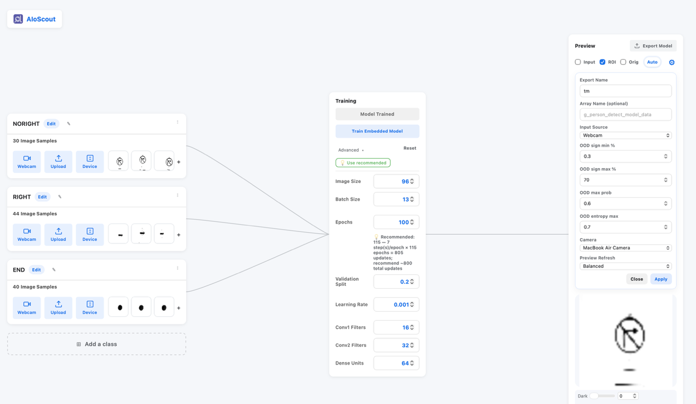
The "Use recommended" button fills in the recommended hyperparameters4.6 Training
After setting the hyperparameters, click Train Embedded Model and wait for training to complete. Monitor the validation accuracy: a high validation accuracy together with poor live performance indicates overfitting or insufficient sample variety — recapture samples in different lighting and at different angles.
4.7 Preview — Live Testing
Before previewing, confirm that the image-uploading code from Task 1 is still flashed on the board.
Step 1. Click the Gear icon in the Preview Area, set the input source to Device, and choose the port. (The "export" setting is irrelevant here.) All preview images are resized to image size × image size in grayscale, exactly as in training.
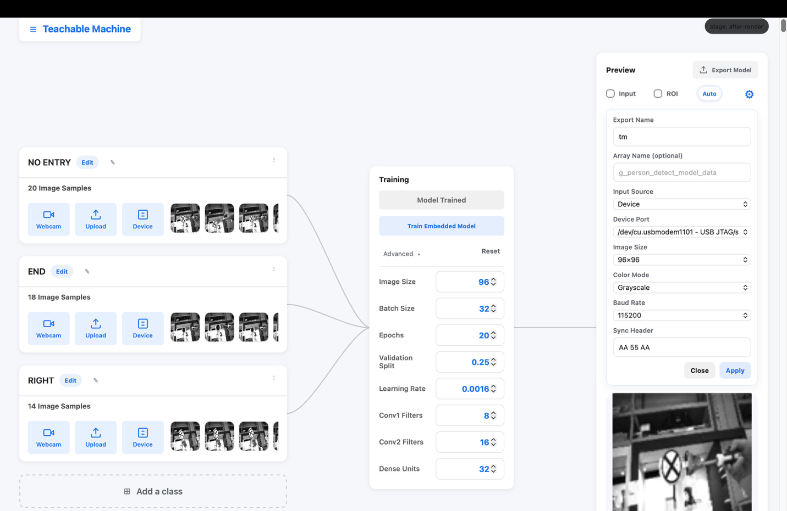
Set source to Device and choose the portStep 2. Toggle Input to see the live image, and read the confidence bar at the bottom — switch between show % and show score to change its units. Toggle ROI to see exactly what the model receives, or Orig to see the processed image. The Dark/Lum thresholds can also be adjusted here, with the effect visible live.
 Interpretation view: live image, ROI, and the confidence bar
Interpretation view: live image, ROI, and the confidence bar
4.8 The OOD Gate — Recognizing "No Sign"
A SoftMax classifier produces a confident-looking output for any input — including an empty scene. To answer the separate question, "does this frame contain a sign at all?", the new app version adds four OOD (out-of-distribution) parameters to the Preview settings. The same four parameters exist on the device, so the host preview and the board always apply the same gate.
The gate runs three layers around inference; if any single layer fires, the frame is reported as "No Sign":
| Layer | Parameter | Default | Meaning | Fires "No Sign" when… |
|---|---|---|---|---|
| 1. Sign-pixel ratio (before inference — cheapest) | sign_pct window | 0.3–70 % | Percentage of pixels whose brightness falls inside the Dark/Lum mask window | the ratio is below spmin (scene has almost no dark target) or above spmax (lens covered / all-dark scene) |
| 2. SoftMax top probability (after inference) | max_prob minimum | ≥ 0.60 | Confidence of the model in the top class | the top-class probability is below 0.60 — the model is not confident itself |
| 3. Normalised entropy ratio (after inference) | entropy_d maximum | ≤ 0.70 | How spread out the output distribution is (entropy / max entropy, normalized to 0–1) | the ratio exceeds 0.70 — the probabilities are spread too evenly; the model is guessing |
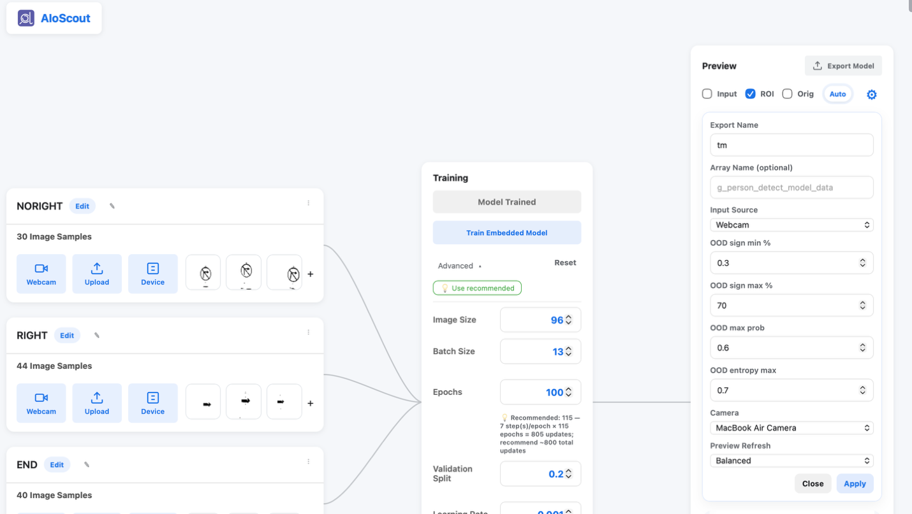
The four OOD parameters in the Preview settings — the same values apply on the deviceThe default spmin of 0.3 % is deliberately small: a distant or small sign, whose dark pixels cover only a small fraction of the frame, still passes layer 1.
4.9 Export and Save
When the model performs satisfactorily, click Export model, and save the project via the top-left menu → Save Project.
Show the TA / instructor: a trained model with at least two classes, live preview recognizing the objects, and the exported model files.
5. Task 3 — Deploy the Model on the MCU
With the model trained, the final step is running it on the chip.
Step 1. Open the folder where the model was exported, and the project folder containing TFLite.ino.
Step 2. Copy these five files from the export folder into the project folder (replacing the existing versions):
tm_model_data.cpp— the quantized model weightstm_model_data.hmodel_resolver.hmodel_settings.cppmodel_settings.h
 The five export files, copied into the TFLite.ino project
The five export files, copied into the TFLite.ino project
Step 3. Open TFLite.ino and confirm that IMG_SIZE matches the "image size" chosen in the TFLiteTraining application (default: 96). A mismatch supplies wrongly sized images to the model and produces meaningless output.
Step 4. Upload the code, open the Serial Monitor, and observe the model classifying the live camera stream:
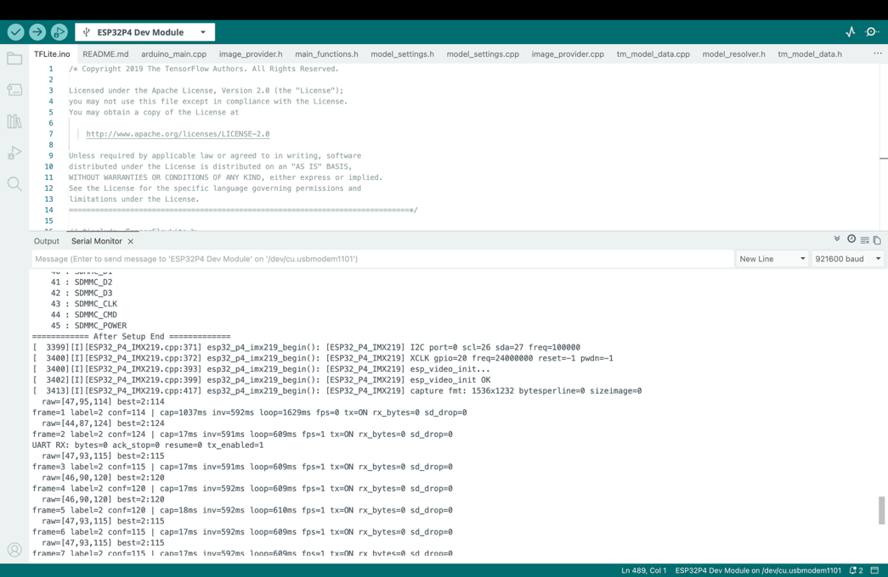
The model running on the ESP32-P4 — live inference outputStep 5. In the Serial Monitor, commands can be typed to set the output mode and the parameters:
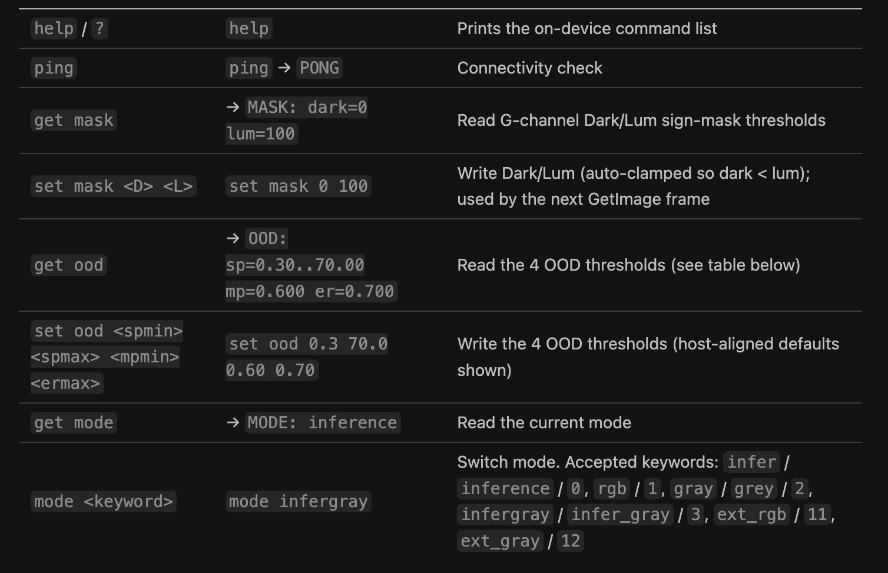
Serial commands: set the output mode, inspect the OOD parameters, and adjust themIn particular, get ood reports the current OOD values, and set ood 0.3 70.0 0.60 0.70 restores the defaults. See the appendix (§6.1) for guidance on fine-tuning these parameters.
Show the TA / instructor: the model running on the ESP32-P4, classifying live camera images with sensible confidences.
6. Appendix
6.1 Fine-Tuning the OOD Parameters
- Missing detections (a real sign reported as "No Sign") → loosen the gates: lower spmin, raise spmax, lower mpmin, raise ermax
- False detections (an empty scene reported as a sign) → tighten the gates: raise spmin, lower spmax, raise mpmin, lower ermax
- Use the debug readout to identify which layer fired before changing anything: a too-low or too-high
sign=value indicates layer 1, a lowmax=indicates layer 2, a highent=indicates layer 3. Adjust only that parameter — do not change several at once - The default spmin of 0.3 % is deliberately small so that distant or small signs still pass layer 1
- Before a demonstration, run
get oodand note the current values; if the settings are lost, restore the defaults withset ood 0.3 70.0 0.60 0.70
6.2 Suggested Experiments
- Epochs: train with 5, 20, and 60 epochs — observe the validation accuracy and determine the point at which further training stops helping
- Model size: set Conv1/Conv2 filters and Dense units to the minimum and then to the maximum — compare accuracy and the update rate of the serial output
- Data quality: train once with messy backgrounds and once with strict Dark/Lum thresholds — determine which matters more: cleaner data or a larger model
- Image size: compare 96 and 160 — measure the difference in inference speed
These are the same trade-offs faced in professional edge-AI engineering.